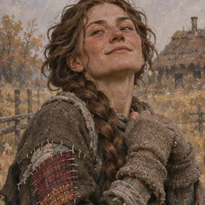

Вечер 1
Последний тёплый хлеб
Сохранить первую возможность укрывать людей и понять, что власть десятины можно ограничить, не отдавая ей человеческую жизнь.
Открыть сценарий →Пепельные рыцари требуют от Низины трёх меж больше тепла, чем могут дать её очаги. Семеро соседей способны укрыть дворы, вывести пленников и соединить разобщённые ячейки сопротивления. До Сведения очагов остаётся восемь игровых встреч: удастся ли деревням сохранить хотя бы одну свободную зиму?

Перед чтением вступления сверьте место героев, присутствующих людей и предметы с итогом прошлого вечера. Если условия встречи отпали, сыграйте последствия там, где находится партия. Событие по расписанию может произойти за кадром. Герои узнают о нём от тех, кто был на месте.
Положите на стол только полученные угли. Предложите выбрать межу для частичного освобождения либо потратить белую минуту на выход людей. В восьмом вечере спросите жителей обеих сторон, где они будут зимовать.
Десятину собирать не станем. Разделим последнюю выпечку при свидетелях. Обходим соседние дома с хлебом, каждый хозяин называет свой пай. Рыцари приезжают к пустому двору. Соседи помнят, кого накормили; недоимка остаётся за деревней.
Сведём принятые корзины с содержимым командной жаровни. Куда действительно уходит жар? Доступные свидетельства — Принятые корзины, Пустая командная жаровня. Плату теплом можно проверить отдельно от печати рыцарей. Сама печать позволяет Вералу показать, что он выполнил поручение. Предлагаем Вералу показать знак при свидетелях. Показываем жителям расчёт неисполнимой дани. Каждая деревня сама решает, поддерживать ли свой очаг; за неё никто не клянётся.
Доспехи удержали хлебный двор и увезли корзины. Договариваемся, чей очаг будет принимать людей ночью. Отдаём оставшийся жар одной семье на ночь. Утром остальные решают, просить ли рыцарей о помощи; три свободных очага объявлять рано.
8 сессий по 150 минут: вступление и повтор 10, три сцены по 35, перерыв 10, завершение и последствия 25. При тяжёлой теме пауза заменяет часть сцены, а не продлевает встречу. Подготовленные герои — уровень 3. Прочитайте первую сессию, выберите состав и передайте игрокам отдельную страницу героев.
В мастерской создайте или откройте свой черновик, выберите импорт пакета и укажите package.json либо нужный файл из variants. Проверьте сценарий и состав в предпросмотре; активацию подтверждает ведущий. Сюжетные развилки, часы давления и жанровые действия разрешаются ведущим — они не становятся автоматически сыгранными событиями.
Пакеты разных размеров используют первые N героев в порядке карточек. Дополнительные герои дают новые роли, но не обязательные ключи к истории. Выбор произвольного состава требует правки черновика и повторной проверки.
Тяжесть оккупации, осторожная близость, упрямое гостеприимство. Насилие показывается через утраты и решения, без натуралистических подробностей. Победа измеряется живыми людьми и сохранёнными домами.
Сохранить первую возможность укрывать людей и понять, что власть десятины можно ограничить, не отдавая ей человеческую жизнь.
Открыть сценарий →Освободить желающих работников, получить второй независимый способ понимания обряда и принять ответственность за место после выхода.
Открыть сценарий →Заработать помощь двух ячеек конкретными поступками и выбрать, что люди вправе обещать друг другу.
Открыть сценарий →Получить три добровольно принятых угля и провести безопасную для людей магическую помеху, осознанно выбрав её публичную цену.
Открыть сценарий →Пережить ответную охоту, сохранив людей и право назвать предел потерь, а затем восстановить связь между разбросанными домами.
Открыть сценарий →Выбрать между ограниченным отходом отряда, полным разрывом и спасением доступного, подготовив реальные роли и запасной путь.
Открыть сценарий →Выполнить добровольный вывод людей и выбранную степень разрыва связи, сохранив право на частичный результат или отход.
Открыть сценарий →Превратить достигнутое освобождение или отход в пригодную для жизни первую стоянку и завершить личные истории без обещания общей победы.
Открыть сценарий →
Короткие седые волосы, мука на тёмном фартуке.
Мельничиха раздаёт мерные ковши и спорит с теми, кто просит лишнее.
Сохранить зимний хлеб и перестать отвечать за каждое обещание в одиночку.
В прошлую облаву она выбрала спасение муки и оставила терновое укрытие. Считает это необходимым решением, но стыдится говорить с вышедшими оттуда людьми.
Не знает устройство трёх ладоней, местонахождение каждого пленника или решений Савы после последней встречи.
Объясняет свой выбор прямо, если её спрашивают о терновнике; помощь не требует признания её виновной.

Плащ из грубой шерсти, белая прядь над виском.
Он приводит к общему огню взрослых соседей, потерявших дом.
Чтобы ни один человек не стал расходом в чужом расчёте запасов.
При бегстве он сам приказал бросить мельничные мешки. Его ячейка Межи хранит страх, что мельничиха снова предпочтёт еду людям.
Не знает о переговорах командора и не умеет отличать рабочую ладонь от обломка.
Рассказывает о брошенных мешках при прямом вопросе; его согласие возникает после выполненной помощи, а не удачной речи.

Плотная дорожная юбка, ладони в шерстяных повязках.
Пекарь предлагает последний хлеб людям, которые не торгуются о цене.
Сохранить право самой решать, кому открывать свой дом.
Она готова передать первый гостевой уголь даже после потери пекарни, но не хочет, чтобы её поступок выдавали за согласие на любое будущее требование.
Не знает обряд целиком; не может говорить от имени всех жителей Брода.
Даёт уголь после просьбы и названного принимающего хозяина; рассказ о невозможной доле не требует доверия или броска.

Прямые плечи, серый рабочий халат, глиняный браслет.
Пленница распределяет между взрослыми работниками тяжёлые и лёгкие заготовки.
Вывести желающих из навеса и оставить каждому право отказаться от сопротивления.
Она видела полный пробный обряд и заметила, что пустая ладонь отдаёт связь, не причиняя вреда работнику. Скрывает это только от надсмотрщиков, а не от других пленников.
Знает устройство по работе, но не знает, кто в деревнях примет людей и согласится ли командор на отход.
Сразу сообщает способ любому, кто спросит, что держит навес; при невозможности разговора передаёт его через чашу с нарисованными ладонями.

Грубые рукавицы, длинная коса, пёстрая заплата на локте.
Ткачиха помогает усталым работникам нести глиняные формы.
Вернуться к собственному ремеслу, не становясь символом чьей-либо борьбы.
Она согласится остаться с теми, кто пока боится выходить, но не хочет, чтобы спасители принимали это за благодарную жертву. Ей можно предложить другой безопасный выбор.
Не знает белую паузу и не может обещать решения остальных работников.
Называет опасения группы после спокойного вопроса; согласие каждого пленника ведущий выясняет отдельно без убеждения броском.

Старый овчинный жилет, белёсые глаза, тёплая глиняная чашка.
Хранитель часовни принимает любой огонь, который принесли как гостя.
Передать доступный каждому обычай, не стать новым хозяином над чужими печами.
Его семейная пробная ладонь сохранилась со времени первой оккупационной зимы. Он проверял её только на своём очаге, но опыт можно повторить открыто.
Не знает устройства охраны навеса, намерений Верала или будущей погоды.
Показывает полный опыт при первой просьбе о помощи. Не требует клятвы, оплаты или признания своей веры.

Кожаный фартук поверх драного кафтана, глина на подбородке.
Обжигальщик проверяет заготовки, не глядя рыцарям в прорези шлемов.
Уйти с Белой печи вместе с работниками и не быть назначенным единственным виновником их бед.
Он принимал лишние нормы ради места у тёплой печи. Теперь понимает, что нормы никогда не закончатся, но боится просить о месте среди освобождённых.
Не знает тайных планов сопротивления и не знает, согласится ли Тара идти вместе с ним.
Разрешает осмотреть учебную форму при прямой просьбе; для ухода просит публично назвать его самостоятельным человеком, а не платой за помощь.

Высокий доспех цвета печной золы; в прорези шлема виден взрослый человеческий профиль.
Командор объявляет повинность своим правом и не притворяется справедливым судьёй.
Сохранить свой отряд и знак командования, даже если придётся оставить три деревни.
Он знает, что без местной сезонной связи доспехи придётся увести. Готов принять пустую жаровню и отступить до весны, если способность разорвать связь доказана действием.
Не знает мест убежищ без следа или сообщения; не знает числа углей у героев и будущего выбора деревень.
Называет конкретные условия отхода после демонстрации учебной ладони; успешный бросок нужен только для улучшения удобств встречи.

Белёный передник, спокойные руки, корзина чистых повязок.
Лекарь Меловиц помогает тем, кого привели из рабочих дворов.
Оставить в деревне тёплый приют, даже если другие уйдут.
Он боится, что его решение остаться объявят поддержкой оккупации. Готов принимать гостей и помогать уходящим, не соглашаясь на собственную эвакуацию.
Не знает способ полного разрыва и не умеет предсказывать последствия повреждения чужого доспеха.
Сообщает о доме и чаше сразу после вопроса; своё решение остаться объясняет, если его спросить без требования оправдаться.

Застёгнутый до горла плащ, тяжёлый деревянный костыль.
Бывший возчик помогает переносить припасы и резко говорит о рыцарях.
Увидеть ощутимый ответ оккупанту и вернуть себе право действовать.
Он хочет направить весь гостевой жар на один доспех, хотя не знает, поможет ли это пленникам. Его злость не делает его предателем; ему можно дать полезную задачу или принять отказ.
Не понимает устройство ладоней и не знает, где находится отряд Верала без наблюдения.
Предлагает свой рискованный план открыто. После названной цены соглашается обсуждать другой полезный вклад, но не обязан простить оккупантов.
Широкая низина среди известковых холмов, сложенная ковшом, как ладонь. Три деревни — Лисий Брод, Кривые Стога и Меловицы — разделены межевыми камнями, терновником и остывшими обжиговыми ямами. В холодном воздухе над каждой печью видна тонкая серая нить: она тянется через поля к Чёрной борозде, и по ней здесь издалека узнают, чей очаг ещё топится.
Деревня пекарей у старого брода через ручей; по преданию, мелкое место здесь первым поселенцам показала лиса. Низкие дома с толстыми печными трубами окружают общий хлебный двор с длинными столами и козлами для выпечки. На мостках у каждой двери лежит горсть остывшего пепла, и её не сметают: говорят, сметёшь — рыцари решат, что в доме снова есть чем платить.
Деревня скотоводов на продуваемом склоне, где ветер за много лет наклонил все стога в одну сторону; по ним пастухи находят дорогу в метель. Общие хлева пахнут сеном и овчиной. Жители держат двери открытыми даже на морозе, чтобы слышать друг друга: закрытая дверь здесь означает, что хозяин никого не ждёт.
Деревня обжигальщиков и копателей белой глины. Белёные дома жмутся к старым обжиговым ямам, и каждую осень их стены заново мажут известью: белая стена дольше держит тепло и раньше показывает трещину. У дверей в стенах видны ниши для ламп. На ветру известковая пыль летит вдоль улиц и кажется снегом, которого ещё не было.
Старая мельница над замёрзшим ручьём, куда все три межи по обычаю свозили зерно и платили за помол ковшом с мешка. Колесо не движется с первой оккупационной осени, лопасти обросли льдом. Под крышей хранят общие мешки, в сыром углу натекает вода, а у маленькой жаровни принимают людей, которым некуда вернуться.
Рабочий двор у Белой печи под навесом из закопчённых плит на толстых деревянных стойках. Взрослые работники в серых халатах несут к огню сырые глиняные заготовки; на их запястьях глиняные полосы, от которых к стойкам тянутся серые жилки. Навес зовут Холодным: он стоит у самого жара, но тепло отсюда уходит в поле.
Открытая обжиговая яма с низкой каменной кромкой, на которой ещё видны клейма старых гончарных семей: здесь когда-то обжигали черепицу и ярмарочные горшки на всю Низину. Снег отступает от ямы на десяток шагов, земля вокруг покрыта рыжей глиной. Над ровным жаром висит большая незавершённая глиняная ладонь, и по её пальцам скользит серый отсвет.
Просторная ложбина за терновыми стенами в два человеческих роста; говорят, сюда ещё прадеды загоняли скот от волков, и в корнях до сих пор торчат жерди старых загонов. Среди корней устроены сухие лежанки, посредине — яма для общего огня, чтобы его не было видно с поля. Пахнет дымом и мокрой корой.
Бывшая часовня на краю Лисьего Брода, расколотая надвое от купола до порога; сквозь трещину ночью видны звёзды. Две половины расходятся над чашей тёмного камня. Крыши нет, но дождь в чашу не попадает. Её хранитель, старик с белёсыми глазами и тёплой глиняной чашкой в ладонях, принимает здесь любой огонь, который принесли как гостя, и никого не спрашивает о вере.
Длинное поле за известковыми холмами, где до завоевания сеяли лён. Теперь на нём стоят три круглые жаровни и деревянные рабочие помосты, а вдоль края тянутся утоптанные грузовые дорожки. Снег здесь не держится: земля между жаровнями всегда тёплая, над бороздами стелется пар, и ничего на ней больше не растёт.
Старая деревянная лестница через межевой вал над туманной ложбиной, почерневшая с давнего степного пожара: старики говорят, огонь тогда остановился ровно у этих ступеней. По одну сторону тянется глухой терновник, по другую стоят пустые известковые тележки, на которых когда-то возили белую глину к печам Меловиц.
Бывшая общая конюшня трёх меж из тёсаного камня, с коновязью и медным кольцом у ворот; перед ярмаркой здесь ковали лошадей. Теперь в стойлах вместо коней стоят пустые рыцарские доспехи, и каждое стойло освещает одна маленькая жаровня. У дальней стены висят три выцветших знамени. Здесь принимает командор.
Условия: Все три ладони раскрыты гостевыми углями; группа обеспечила хотя бы одно действующее убежище и вывела желающих пленников.
Сезонная связь трёх деревень разорвана до весны. Они сами выбирают, где жить зимой, а местный отряд теряет магическую опору. Соседние земли остаются под властью завоевателей.
Цена: Укрытия и запасы остаются в том состоянии, которого достигли решения. Свобода от обряда не чинит сожжённые дома и требует зимнего труда.
Условия: Верал увидел действующую пробную ладонь, получил целую пустую жаровню, а обе стороны вслух приняли границы сезонного отхода; герои не нарушили согласованную встречу.
Его отряд уходит до весны и оставляет выбранный коридор для освобождённых. Герои могут прекратить Сведение либо сохранить его пустые формы без передачи тепла; они выбирают это отдельно.
Цена: Командор сохраняет отряд и знак власти. Гарантий от других сил нет, а деревни должны решить, как встречать весну. Ни люди, ни новые должники не служат платой.
Условия: Раскрыты одна или две ладони либо удалось защитить только часть поселений; оставшиеся задачи завершить не получилось.
Выбранные деревни получают зиму без связи, остальные сохраняют повинность. Можно принять соседей, продолжить обмен едой и готовить освобождение без обещания скорой победы.
Цена: Приём соседей расходует доступное жильё и запасы. Ведущий называет конкретные оставшиеся ограничения, а не объявляет всё сопротивление напрасным.
Условия: Обряд не сорван или группа сознательно отказалась от него, но обеспечила выход людям; хотя бы одна освобождённая группа и один очаг достигли тернового убежища.
Земля остаётся у оккупантов. Изгнанники сохраняют общину, уцелевших и право самим выбирать дальнейший путь. Восьмая встреча определяет их первую зимнюю стоянку.
Цена: Часть домов утрачена, возвращение не обещано. При нехватке запасов принимают временный трудовой обмен или открытый договор о проходе, без обязательной гибели героя.
Условия: Связь не разорвана, отход не согласован и организованного выхода людей не произошло; группа решила завершить эту попытку.
Три деревни остаются под прежней властью. Герои могут сохранить отдельные отношения и помощь у доступного очага, но ведущий не объявляет невыполненное спасение состоявшимся. Будущая попытка остаётся возможностью, а не обещанием.
Цена: Невыполненные обещания и утраченные припасы названы прямо. Смерть, предательство или окончательное отчаяние не добавляются автоматически ради наказания за неудачный исход.
Авторская подготовка и техническая проверка не заменяют живую игру. Длительность, сложность и эмоциональное восприятие пока не проверены группой. Картину первой встречи можно открыть отдельно. Тактические схемы построены из данных встреч. Полный каталог содержит материалы ведущего — публиковать его целиком для игроков нельзя.